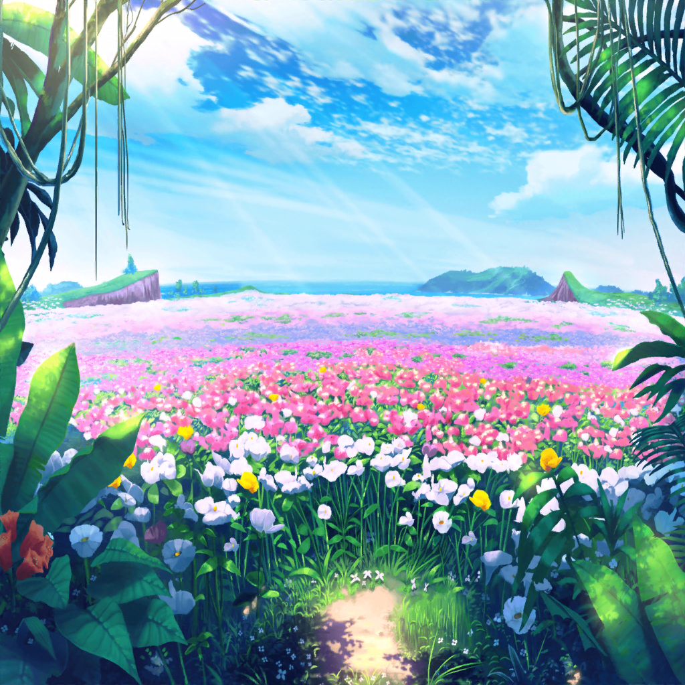

無人島 花畑
彩
はぁ……はぁ……はぁ……
……や、やっと到着したよっ！
彩
……え？
みんな……見て……この、景色……
イヴ
すごいです……花びらがヒラヒラと舞っていて……
まるでカブキみたいです！
ここがミッションで言っていたお花畑ですねっ！
日菜
ホントだ～っ♪
見渡す限り、お花お花お花、だね！
るるるるるんってきちゃったー♪
千聖
ふふ、こんな素晴らしい景色を見たら、
今までの疲れを忘れてしまうわね♪
麻弥
はい！
ジブンもどこかに疲れが吹き飛んでしまったみたいです！
彩
これって……
苦労したから、余計に景色がキレイに見えてるのかな？
イヴ
そんなことないと思います！
この景色は本当に美しいですっ！
スタッフ
みなさん、本当にお疲れさまでした！
よくここまで辿り着きましたね！
ここがみなさんのミッションのゴールとなります
千聖
ここが、ゴール？
ということは、つまり……
彩
もしかして、全部のミッションをクリアってことですか！？
スタッフ
はい！ おめでとうございます！
彩
ほ、ホントにっ！
やったーーーーっ！
イヴ
やりました！ みなさん、無事に生き残れましたよ！
チサトさんもヒナさんもマヤさんも！
もっと喜びましょうっ！
麻弥
……ふぅ～。
ジブンは、喜ぶというよりも、
すごくホッとしました……
日菜
えー、もう終わり～？
もっといろんな冒険したかったな～
千聖
というよりも、私達が達成したミッションと言えば、
食料探しと吊り橋渡り、そしてこの花畑探し……
千聖
ずいぶんと少ない気もしますけど……
スタッフ
いえ、実はそれなんですが……
彩
えっ！？ 実はもっとミッションがあったけど、
発表するよりも前に、麻弥ちゃんが
次々とクリアしてたんですか！？
スタッフ
ええ、アウトドアの専門家に聞いて、たくさんのミッションを
用意していたんですが、麻弥さんがナチュラルに先回りして
クリアしていくので、私達も驚いてしまって……
麻弥
そ、そうだったんですか……
なんだかすみませんっ。
基本素人なので、その辺の空気が読めなくて……
スタッフ
いえいえ！
このままじゃ番組が成立しないかも、って少しは焦りましたけど
麻弥さんの行動力や、とっさの判断力は素晴らしかったですよ！
彩
私もホントにそう思うっ！
麻弥ちゃん、すっごく頼りになるんだもん！
カッコよかった～♪
麻弥
い、いや……
カッコイイなんて、そんな……
イヴ
わっ！ その謙虚な心……
マヤさんは、正にブシドー精神の塊ですっ！
千聖
麻弥ちゃんが、いろいろなことを決めてくれたおかげで
とても助かったわ
日菜
うんうん！
なんだか麻弥ちゃん、
いつもより、るんってしてた！
麻弥
あ……そ、そうでしたか？
えへへ、バンドじゃないところでもみなさんの
役に立てたのなら嬉しいです
彩
……あ！ あぁぁぁぁぁぁっ！
そうだっ！
麻弥
ど、どうしたんですか、彩さん！？
急に大声をあげて！
彩
新曲っ！ 私達の新曲だよっ！
麻弥
……新曲？
……はっ！ そうでしたっ！
彩
この無人島でのミッションをすべてクリアしたら、
私達の新曲が発売されるってルールだったもん！
ミッションに必死でつい忘れちゃってたけど……
彩
けど、これで全ミッションクリアってことは……
スタッフ
はい！
もちろん、みなさんの新曲を約束通り発売させてもらいます！
彩
や、やったあーっ！！
麻弥
良かったですね、彩さん！
ジブンもとっても嬉しいですっ！
やりましたーっ！
イヴ
ほ、ホントに良かったです！
なんだか夢みたいです！
日菜
あははっ♪ 新曲、楽しみだねー、千聖ちゃん！
千聖
ふふ。頑張った甲斐があったわね
スタッフ
……と、言いたいところですが～
彩
……で、ですが！？
スタッフ
ここで最後の特別ミッションを発表したいと思います！
彩
と、特別ミッション、ですかっ！？
麻弥
そ、そんな話、聞いてないですよっ！？
スタッフ
はい、何しろ今、急遽決まりましたんで！
イヴ
え、今ですか！？
スタッフ
それは……『山頂でCDの告知を叫ぶ』です！
千聖
山頂で……告知？
スタッフ
はい！ 叫ぶのは１人だけ。
なるべく遠くの人まで聞こえるように
ありったけの声で告知してくださいね
麻弥
１人で叫ぶ姿を想像してみましたけど……
なかなか恥ずかしそうですね。
さて、誰が行ったものやら……
日菜
こういう時は、もちろん……ねー！
彩
……って！？
なんでみんな私を見てるの！？
日菜・千聖・イヴ・麻弥
お願いね。
おねがーい！
お願いしますっ！
彩
え～～～～～～っ！
わ、私～～～～～～～っ！？
無人島 山頂
スタッフ
それでは、丸山彩さん！
本番まで、３、２、１……
彩
ぱ、パスパレの新曲CDの発売が決まりました～！！
やったぁぁぁ～～～～～！
みんな、楽しみにしててねぇぇぇ～～～っ！！